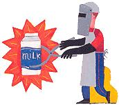

Here's another word of wisdom about your diet: If it glows, don't eat it.
By genetically engineering mammalian cells to produce luciferase, the enzyme responsible for firefly light, Xenobiotic Detection Systems (XDS) has developed a test to detect the presence of dioxin in the environment. The test, which causes dioxins to glow, can be used to detect their presence in air, water, soil and biological samples, thereby reducing your chance of exposure.
Dioxins, the carcinogenic byproducts created in the manufacture of chemicals and products such as processed animal feed, are known to be toxic to humans and animals. Animal studies suggest that low-level exposure over long periods to dioxins may also result in birth defects and decreased fertility in both males and females. According to Robert Clark, business manager at XDS, the effect of dioxins is cumulative. "They are in the food chain," says Clark. "We just don't know how much [dioxins] are considered extremely detrimental."
Most dioxin exposure, however, comes through the food we eat, and is concentrated in animal fats. Federal dietary guidelines recommend eating lean meat and poultry and consuming lowfat or skim milk to reduce dioxin exposure.
-Michael As prion
|
 |
|
|